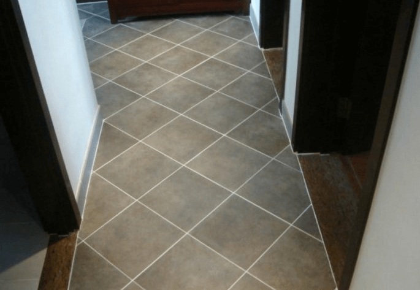
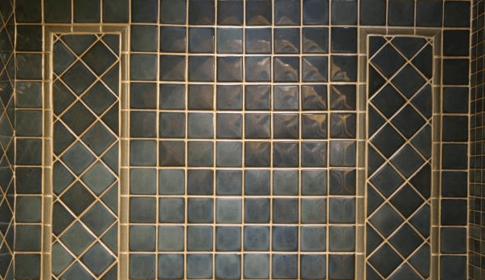

美缝市场的不断壮大，使得美缝产品层出不穷。就比如说美缝剂的出现，引领了美缝市场的大变革，继而真瓷胶美缝剂、陶瓷泥的不断兴起不断的充斥着以往的美缝剂。以前的人们对美缝剂的要求不高，只希望可以让瓷砖缝隙不变脏黑就行了，但是现在的人们追求的就是美观精致，人类再也无法阻止真瓷胶的火爆了。但是由于真瓷胶和美缝剂的功能有所差别，所以二者在使用的范围上也是有所不同的。下面就来深入的给大家解析一下它们二者的根本区别。
美缝剂只有美缝的功能，并且在粘接修补漏洞的功能上完全空白，所以只是用于客厅、走道、卧室、墙面等地方的瓷砖美缝，而真瓷胶的防水防霉的功能特别强大，适用于卫生间等终年潮湿的地方以及厨房等容易藏油污的地方，二者的应用范围是不同的；真瓷胶专指双组份、固化后硬度高、光泽好、性能堪比陶瓷的这一类美缝剂，真瓷胶各项性能远超出普通美缝剂，真瓷胶耐水、耐油、防霉、质硬、易清洁、具有与陶瓷釉质类似的光滑表面看上去很有质感的。真瓷胶还可以代替阳台、浴室、厨房阴阳角的玻璃胶，彻底解决玻璃胶发黑的问题。但是由于真瓷胶现在的价格较高，美缝剂的价格实惠，所以经济能力一般的用户可以在浴室和厨房用真瓷胶美缝，其他不易沾污的地方用美缝剂比较好。
 一、从施工后的效果来看，真瓷胶施工后基本与瓷砖平齐，而美缝剂比瓷砖表面相对凹下去一点，留出一个深V形的砖缝，看起来更具有美感。
二、从性能上来说，真瓷胶的粘接能力更胜一筹，表面坚硬如石，结实耐用，在防水防霉防油污的性能上，二者不相上下，并且两者都有很强的自洁性，易擦洗，能很好地防止瓷砖缝隙发黑变脏。
三、从外观上来说，美缝剂自然细腻，颜色丰富，能很好地与各种瓷砖进行搭配，而真瓷胶的颜色基本上只有白色一种，用户没有多种颜色选择；除此之外，美缝剂的光泽度和硬度都不如真瓷胶，真瓷胶的硬度和强度基本上和瓷砖相平齐，而美缝剂的韧性稍低于瓷砖，更有利于瓷砖的伸缩缝。
四、从价格上来说，现在真瓷胶还属于一种高档的装修材料，因此价格偏高，而美缝剂则是一种普通的美缝产品，价格非常合理，很适合大众消费，从性价比来说，美缝剂更好一些。现在的缝美家美缝剂不仅寿命长，粘接能力突出，还是绿色环保的好产品，是很多用户的不二选择。
五、从施工部位上来说，由于真瓷胶一般是指双组分的，还是刚性，比较硬，不适合用在瓷砖缝隙，只适合用在厨卫阴阳角，而美缝剂是有韧性的，适合用在瓷砖缝隙，因此两个产品在使用上施工部位是不同的。真瓷胶还具有玻璃胶的封边功能，而美缝剂基本上只具备美缝的作用。
济宁市鱼台建材 版权所有 关键词：鲁南真瓷王